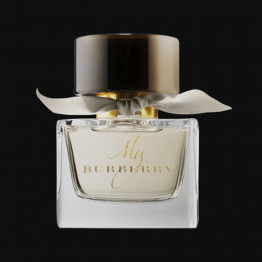

FRESH BLOOMS
- Bergamot and mandarin give a burst of freshness,while the heart notes of jasmine and freesia add a delicate,floral touch.
- The notes of musk and cedarwood give the fragrance a warm and grounding finish, making it perfect for daily wear. The elegent and
feminine bottle design makes"Fresh Blooms" a beautiful addition toany collection.
- Fresh fragrances usually comprise of citrus, water and green notes. This means they have refreshing,
zesty and vibrant smells. Citrus-based fragrances are usually created with lemon, mandarin and bergamot,
while water fragrances are made with aquatic notes like sea spray; think L’Eau d’Issey by Issey Miyake,
or Acqua di Gio by Armani.
- Fresh green fragrances are often reminiscent of herbal and leafy scents for a crisp, uplifting smell.
They can sometimes be referred to as aromatic fougère fragrances, created with notes of lavender, rosemary or basil.
- Floral fragrances are one of the most popular families, and one of the broadest. Any fragrance that has a
sweet and flowery scent will belong under this family, using notes such as roses, jasmine, lilies and peonies.
- Floral fragrances can range from being light and delicate, to more complex and intense.
- Oriental fragrances are warm, sweet and even a little spicy. A more luxurious fragrance family,
oriental fragrances vary from floral oriental, soft oriental and woody oriental.
- Perfumes and aftershaves in this family are rich and sensual, often made with interesting notes of
cardamom, cinnamon, vanilla alongside the likes of jasmine, orchid and orange blossom.
- Woody fragrances are another warm family, with a mysterious and captivating scent that is often
favoured amongst aftershaves in particular. Using wood-based smells like cedarwood, sandalwood,
vetiver and amber, it’s a great choice for wearing in the evening.
- Woody fragrances are split into mossy woods with an earthy, sweet undertone, and dry woods which
often have a smoky, leathery smell to them.

FRESH BLOOMS
Rs.30,000/-